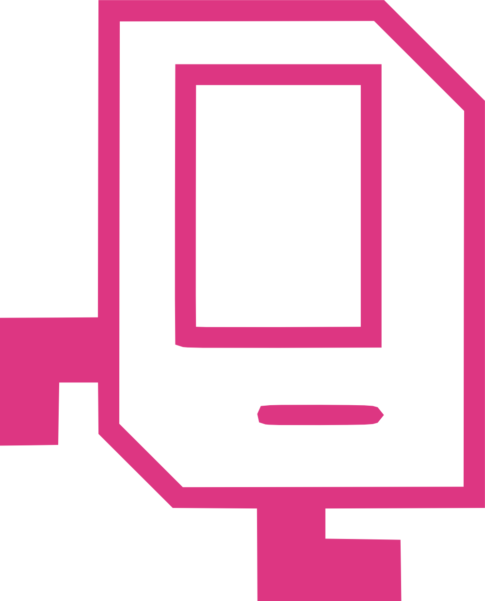

|  |
cs198
cs198 is a program at Stanford University for undergraduates to TA - "section-lead" the introductory CS classes, cs106a and cs106b, and cs106x. I've been a section leader every quarter since I started, eight quarters ago. There are many great things about section leading, but the best part is leading a weekly discussion section for twelve or so students.
|